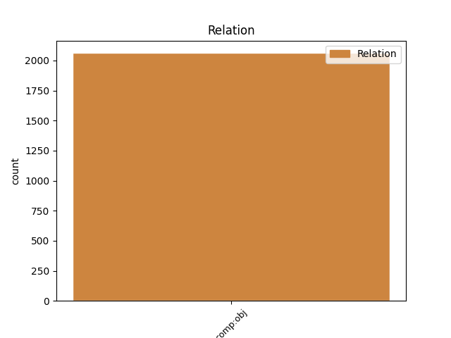
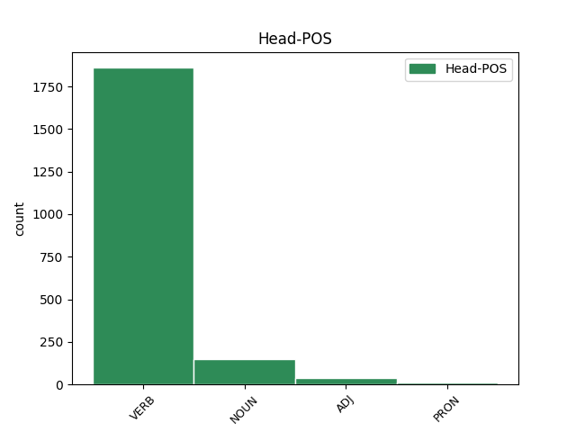
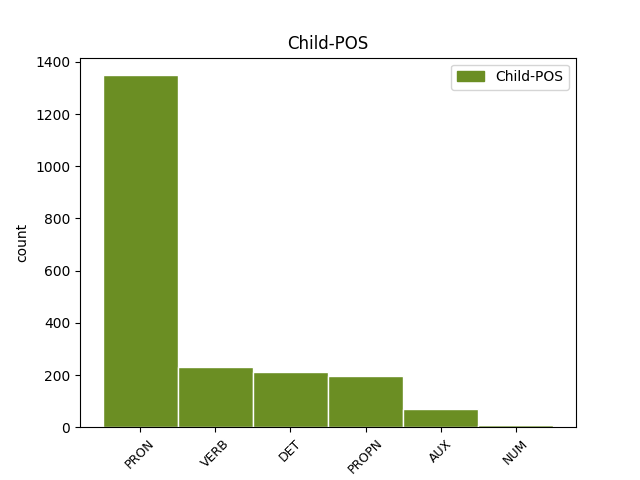

Distribution of features within this leaf



Agreement Rules sorted by frequency.
- When the dependent token is the direct object complements(comp:obj) of the head token, and the dependent token is PRON.
1 Tak _ _ _ _ 0 _ _ _
2 naprawdę _ _ _ _ 0 _ _ _
3 , _ _ _ _ 0 _ _ _
4 nigdy _ _ _ _ 0 _ _ _
5 jej on PRON ppron3:sg:gen:f:ter:akc:npraep Case=Gen|Gender=Fem|Number=Sing|Person=3|PrepCase=Npr|PronType=Prs|Variant=Long 7 comp:obj _ _
6 nie _ _ _ _ 0 _ _ _
7 lubił lubić VERB praet:sg:m1:imperf Animacy=Hum|Aspect=Imp|Gender=Masc|Mood=Ind|Number=Sing|Tense=Past|VerbForm=Fin|Voice=Act 0 _ _ _
8 em _ _ _ _ 0 _ _ _
9 . _ _ _ _ 0 _ _ _
1 Nie _ _ _ _ 0 _ _ _
2 wiem wiedzieć VERB fin:sg:pri:imperf Aspect=Imp|Mood=Ind|Number=Sing|Person=1|Tense=Pres|VerbForm=Fin|Voice=Act 0 _ _ _
3 co _ _ _ _ 0 _ _ _
4 piję pić VERB fin:sg:pri:imperf Aspect=Imp|Mood=Ind|Number=Sing|Person=1|Tense=Pres|VerbForm=Fin|Voice=Act 2 comp:obj _ SpaceAfter=No
5 , _ _ _ _ 0 _ _ _
6 ale _ _ _ _ 0 _ _ _
7 jeśli _ _ _ _ 0 _ _ _
8 to _ _ _ _ 0 _ _ _
9 jest _ _ _ _ 0 _ _ _
10 miłość _ _ _ _ 0 _ _ _
11 . _ _ _ _ 0 _ _ _
12 . _ _ _ _ 0 _ _ _
13 . _ _ _ _ 0 _ _ _
14 dolej _ _ _ _ 0 _ _ _
15 mi _ _ _ _ 0 _ _ _
16 jeszcze _ _ _ _ 0 _ _ _
17 . _ _ _ _ 0 _ _ _
1 Nie _ _ _ _ 0 _ _ _
2 znała znać VERB praet:sg:f:imperf Aspect=Imp|Gender=Fem|Mood=Ind|Number=Sing|Tense=Past|VerbForm=Fin|Voice=Act 0 _ _ _
3 m _ _ _ _ 0 _ _ _
4 Dylana Dylan PROPN subst:sg:gen:m1 Animacy=Hum|Case=Gen|Gender=Masc|Number=Sing 2 comp:obj _ _
5 od _ _ _ _ 0 _ _ _
6 tej _ _ _ _ 0 _ _ _
7 strony _ _ _ _ 0 _ _ _
8 . _ _ _ _ 0 _ _ _
1 W _ _ _ _ 0 _ _ _
2 istocie _ _ _ _ 0 _ _ _
3 , _ _ _ _ 0 _ _ _
4 osiągnięcie osiągnąć NOUN ger:sg:nom:n:perf:aff Aspect=Perf|Case=Nom|Gender=Neut|Number=Sing|Polarity=Pos|VerbForm=Vnoun 0 _ _ _
5 któregokolwiek którykolwiek DET adj:sg:gen:m3:pos Animacy=Inan|Case=Gen|Gender=Masc|Number=Sing|PronType=Ind 4 comp:obj _ _
6 z _ _ _ _ 0 _ _ _
7 pięciu _ _ _ _ 0 _ _ _
8 głównych _ _ _ _ 0 _ _ _
9 celów _ _ _ _ 0 _ _ _
10 analizowanych _ _ _ _ 0 _ _ _
11 w _ _ _ _ 0 _ _ _
12 raporcie _ _ _ _ 0 _ _ _
13 będzie _ _ _ _ 0 _ _ _
14 wymagało _ _ _ _ 0 _ _ _
15 znaczących _ _ _ _ 0 _ _ _
16 starań _ _ _ _ 0 _ _ _
17 politycznych _ _ _ _ 0 _ _ _
18 w _ _ _ _ 0 _ _ _
19 większości _ _ _ _ 0 _ _ _
20 krajów _ _ _ _ 0 _ _ _
21 , _ _ _ _ 0 _ _ _
22 których _ _ _ _ 0 _ _ _
23 łącznych _ _ _ _ 0 _ _ _
24 kosztów _ _ _ _ 0 _ _ _
25 nie _ _ _ _ 0 _ _ _
26 można _ _ _ _ 0 _ _ _
27 było _ _ _ _ 0 _ _ _
28 w _ _ _ _ 0 _ _ _
29 całości _ _ _ _ 0 _ _ _
30 ująć _ _ _ _ 0 _ _ _
31 w _ _ _ _ 0 _ _ _
32 prezentowanych _ _ _ _ 0 _ _ _
33 danych _ _ _ _ 0 _ _ _
34 - _ _ _ _ 0 _ _ _
35 przyznają _ _ _ _ 0 _ _ _
36 autorzy _ _ _ _ 0 _ _ _
37 . _ _ _ _ 0 _ _ _
1 - _ _ _ _ 0 _ _ _
2 Nie _ _ _ _ 0 _ _ _
3 wiem wiedzieć VERB fin:sg:pri:imperf Aspect=Imp|Mood=Ind|Number=Sing|Person=1|Tense=Pres|VerbForm=Fin|Voice=Act 0 _ _ _
4 , _ _ _ _ 0 _ _ _
5 co _ _ _ _ 0 _ _ _
6 zrobił _ _ _ _ 0 _ _ _
7 em być AUX aglt:sg:pri:imperf:wok Aspect=Imp|Clitic=Yes|Number=Sing|Person=1|Variant=Long 3 comp:obj _ _
8 . _ _ _ _ 0 _ _ _
1 Sędzia _ _ _ _ 0 _ _ _
2 temperował _ _ _ _ 0 _ _ _
3 zawodników _ _ _ _ 0 _ _ _
4 kartkami _ _ _ _ 0 _ _ _
5 – _ _ _ _ 0 _ _ _
6 pokazał _ _ _ _ 0 _ _ _
7 aż _ _ _ _ 0 _ _ _
8 trzy _ _ _ _ 0 _ _ _
9 czerwone _ _ _ _ 0 _ _ _
10 , _ _ _ _ 0 _ _ _
11 z _ _ _ _ 0 _ _ _
12 których _ _ _ _ 0 _ _ _
13 dwie dwa NUM num:pl:acc:f:congr Case=Acc|Gender=Fem|Number=Plur|NumForm=Word 14 comp:obj _ _
14 zobaczyli zobaczyć VERB praet:pl:m1:perf Animacy=Hum|Aspect=Perf|Gender=Masc|Mood=Ind|Number=Plur|Tense=Past|VerbForm=Fin|Voice=Act 0 _ _ _
15 piłkarze _ _ _ _ 0 _ _ _
16 Jokera _ _ _ _ 0 _ _ _
17 . _ _ _ _ 0 _ _ _
Disagree Examples:
1 Ubrani _ _ _ _ 0 _ _ _
2 na _ _ _ _ 0 _ _ _
3 niebiesko _ _ _ _ 0 _ _ _
4 dziewczynka _ _ _ _ 0 _ _ _
5 i _ _ _ _ 0 _ _ _
6 chłopiec _ _ _ _ 0 _ _ _
7 trzymają trzymać VERB fin:pl:ter:imperf Aspect=Imp|Mood=Ind|Number=Plur|Person=3|Tense=Pres|VerbForm=Fin|Voice=Act 0 _ _ _
8 coś coś PRON subst:sg:acc:n:ncol Case=Acc|Gender=Neut|Number=Sing|PronType=Ind 7 comp:obj _ _
9 do _ _ _ _ 0 _ _ _
10 jedzenia _ _ _ _ 0 _ _ _
11 na _ _ _ _ 0 _ _ _
12 patykach _ _ _ _ 0 _ _ _
13 . _ _ _ _ 0 _ _ _
1 Ciemnoskóry _ _ _ _ 0 _ _ _
2 mężczyzna _ _ _ _ 0 _ _ _
3 podparty _ _ _ _ 0 _ _ _
4 o _ _ _ _ 0 _ _ _
5 uda _ _ _ _ 0 _ _ _
6 dwóch _ _ _ _ 0 _ _ _
7 innych _ _ _ _ 0 _ _ _
8 mężczyzn _ _ _ _ 0 _ _ _
9 trzyma trzymać VERB fin:sg:ter:imperf Aspect=Imp|Mood=Ind|Number=Sing|Person=3|Tense=Pres|VerbForm=Fin|Voice=Act 0 _ _ _
10 ich on PRON ppron3:pl:acc:m1:ter:akc:npraep Animacy=Hum|Case=Acc|Gender=Masc|Number=Plur|Person=3|PrepCase=Npr|PronType=Prs|Variant=Long 9 comp:obj _ _
11 jednocześnie _ _ _ _ 0 _ _ _
12 za _ _ _ _ 0 _ _ _
13 ręce _ _ _ _ 0 _ _ _
14 . _ _ _ _ 0 _ _ _
1 Teofil _ _ _ _ 0 _ _ _
2 trzymał trzymać VERB praet:sg:m1:imperf Animacy=Hum|Aspect=Imp|Gender=Masc|Mood=Ind|Number=Sing|Tense=Past|VerbForm=Fin|Voice=Act 0 _ _ _
3 je on PRON ppron3:pl:acc:f:ter:akc:npraep Case=Acc|Gender=Fem|Number=Plur|Person=3|PrepCase=Npr|PronType=Prs|Variant=Long 2 comp:obj _ _
4 w _ _ _ _ 0 _ _ _
5 ręce _ _ _ _ 0 _ _ _
6 , _ _ _ _ 0 _ _ _
7 aby _ _ _ _ 0 _ _ _
8 włożyć _ _ _ _ 0 _ _ _
9 dopiero _ _ _ _ 0 _ _ _
10 w _ _ _ _ 0 _ _ _
11 ostatniej _ _ _ _ 0 _ _ _
12 chwili _ _ _ _ 0 _ _ _
13 . _ _ _ _ 0 _ _ _
1 Obejrzał obejrzeć VERB praet:sg:m1:perf Animacy=Hum|Aspect=Perf|Gender=Masc|Mood=Ind|Number=Sing|Tense=Past|VerbForm=Fin|Voice=Act 0 _ _ _
2 je on PRON ppron3:pl:acc:n:ter:akc:npraep Case=Acc|Gender=Neut|Number=Plur|Person=3|PrepCase=Npr|PronType=Prs|Variant=Long 1 comp:obj _ _
3 bacznie _ _ _ _ 0 _ _ _
4 . _ _ _ _ 0 _ _ _
1 Kierują kierować VERB fin:pl:ter:imperf Aspect=Imp|Mood=Ind|Number=Plur|Person=3|Tense=Pres|VerbForm=Fin|Voice=Act 0 _ _ _
2 go on PRON ppron3:sg:acc:m1:ter:nakc:npraep Animacy=Hum|Case=Acc|Gender=Masc|Number=Sing|Person=3|PrepCase=Npr|PronType=Prs|Variant=Short 1 comp:obj _ _
3 na _ _ _ _ 0 _ _ _
4 kursy _ _ _ _ 0 _ _ _
5 dywersji _ _ _ _ 0 _ _ _
6 . _ _ _ _ 0 _ _ _